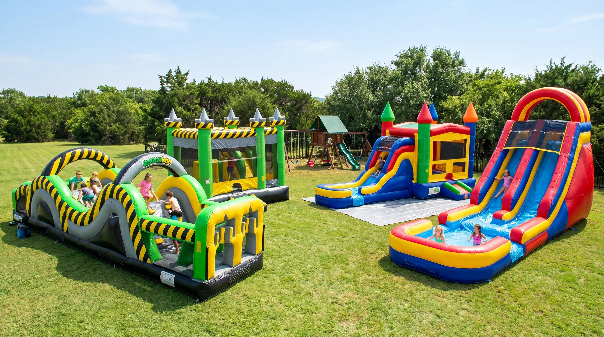

Bounce houses, water slides, and combo inflatables delivered and set up at your Jarrell TX door. Serving Jarrell ISD families, Double Creek Estates, and all of Williamson County.
A moonwalk -- also called a bounce house, bouncy castle, jump house, jumper, spacewalk, or moon bounce -- is an inflatable rental delivered to your Jarrell TX location for parties and events. Jump Around Party Rentals brings the fun directly to you.
Classic inflatable moonwalk rentals for Jarrell TX birthday parties. Also called bounce houses, bouncy castles, and jumpers -- the same great fun, every name.
Beat the Williamson County summer heat with an inflatable water slide rental. Perfect for Jarrell ISD end-of-year parties, backyard events, and neighborhood celebrations.
Combo inflatables combine a jump house with a slide, basketball hoop, or climbing wall. More action in one unit -- great for larger Jarrell TX backyard parties.
Smaller, soft-sided moonwalks sized right for toddlers and young children. Low walls, soft bounce surfaces, and safe for the little ones at any Jarrell TX party.
Every inflatable is cleaned, inspected, and ready to deliver to your Jarrell TX address. Pricing includes delivery, setup, and pickup.
15x15 standard bounce house. Fits up to 8 jumpers. The go-to rental for Jarrell TX birthday parties. Holds kids 3 to 12 years old.
Book ThisBounce area plus attached slide in one unit. Kids get twice the fun. A top pick for Jarrell ISD school carnivals and backyard birthday parties.
See CombosInflatable water slide with a splash zone at the bottom. The perfect upgrade for any Jarrell TX summer party when the Texas heat is on.
See Water SlidesSmaller inflatable designed for toddlers and preschoolers. Soft, low-walled, and sized right for the little guests at your Jarrell TX party.
Book ThisExplore all rental options
Jump Around Party Rentals handles every detail so you can focus on the party. We serve Jarrell TX and all of Williamson County.
On-time delivery to Double Creek Estates, Jarrell ISD neighborhoods, and every address in Jarrell TX 76537.
Our crew sets everything up before your guests arrive and breaks it all down after. You do nothing except enjoy the party.
All rentals are provided by Jump Around Party Rentals, fully licensed and insured in Williamson County and Travis County, Texas.
Every inflatable is sanitized and safety-checked between rentals. Your family deserves clean equipment, every time.
Book online or call (737) 234-3992. We confirm availability within 24 hours and walk you through every detail.
No hidden fees. Your quote includes delivery, setup, and pickup. What we quote is what you pay.
We deliver moonwalks and inflatables throughout Jarrell TX and surrounding Williamson County communities. Same-day availability on select dates.
Jarrell TX sits along I-35, 17 miles north of Georgetown and 24 miles from Round Rock, making it a central delivery point for our Williamson County service area. We deliver to all Jarrell ISD school zones including families near Jarrell Elementary, Igo Elementary, Double Creek Elementary, Jarrell Middle School, Jarrell Ranch Middle School, and Jarrell High School.
Over 914 reviews from Williamson County families who booked a moonwalk, bounce house, or water slide rental.
We rented a combo bounce house for my daughter's birthday in Double Creek Estates. Drop-off was right on time, the jumper was spotless, and pickup was fast. We will absolutely book again.
Best moonwalk rental in the Jarrell area. They brought a huge water slide for our summer party and the kids did not want to get off it. Pricing was fair and transparent.
Used them for a school carnival at Jarrell Elementary and they were incredibly professional. Easy to work with, set up fast, and the kids had an amazing time on the bounce house.
Everything Jarrell TX families ask about renting a moonwalk, bounce house, or water slide.
Fill out the form or call us directly. We confirm availability within 24 hours and handle every detail from there.
Mon to Sun, 7am to 9pm